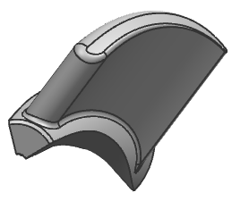

Hide geometry
 Simulation Navigator
Simulation Navigator
-
 Polygon Geometry (expand)
Polygon Geometry (expand)
-
 Polygon Body (1) (deselect)
Polygon Body (1) (deselect)
-
IMPELLER (2) (deselect)
-

Note
The numbering of your polygon geometry may differ. Your display should look like the image above.